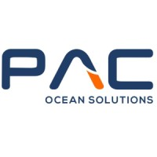
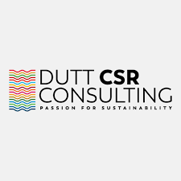

Most sustainability work doesn’t fail at the strategy layer.
It fails at the operational one.
I work at the intersection of ESG strategy and implementation — building the reporting structures, governance processes, and data workflows that organisations can actually sustain.
That’s the space I work in — where reporting expectations, fragmented data, governance realities, and day-to-day operations collide.
Over the past four years, I’ve worked across ESG implementation, sustainable finance, ESG SaaS, and supply-chain risk: designing reporting systems, structuring ESG data and governance processes, supporting investor analysis, and translating regulation into workflows organisations can actually sustain.
Based in Paris, I work across Europe on implementation-focused sustainability projects.
“The best ESG work I’ve done didn’t start with a framework. It started with understanding how the organisation actually operated — and designing from there.”
Sustainability work that lives at the boundary between what regulations require and what organisations can realistically deliver.
Turning ESG obligations into processes, structures, and reporting workflows that internal teams can actually maintain — not just deliver once.
Scope 1–3 emissions accounting designed around how data actually exists — not how frameworks assume it does.
Translating regulatory requirements into product architecture — compliance questionnaires, KPI frameworks, and data collection flows built for software environments.
ESG analysis calibrated for investment contexts — where the output has to be concise, usable, and connected to portfolio decisions.
Designing how organisations engage with sustainability — decision simulations, trade-off workshops, and learning programmes built around realistic complexity.
ESG risk assessment across supply chains — making exposure legible for both operational teams and investment decision-makers.
Process documentation, frameworks, and working tools developed across engagements. Presented here as anonymised examples of how I structure and communicate ESG work.
Swimlane process map, stage-by-stage evidence requirements, RACI matrix, and indicative annual timeline. Aligned to ESRS and CSRD filing obligations.
A London-based maritime operations company needed to strengthen its sustainability reporting in response to growing customer and stakeholder expectations. The engagement focused on developing an end-to-end sustainability report informed by GRI standards and evolving CSRD expectations, while building the operational processes needed to support ESG reporting across fragmented data sources, supplier networks, and day-to-day operations.
The company had limited existing sustainability infrastructure and relied heavily on operational teams and suppliers for data collection. A large part of the work involved balancing reporting expectations with what teams could realistically maintain — especially across inconsistent supplier data, evolving reporting requirements, and limited historical ESG information.
Redacted framework extracts and process templates available on request.
Embedded with Amundi’s ESG research team in Paris. The work focused on ESG disclosure analysis and controversy screening across 300+ issuers in the healthcare sector — covering Europe, Asia, and North America — alongside stewardship engagement preparation, peer benchmarking, ESG scoring, and investor-focused research outputs.
Full detail available on request. NDA applies.
Working with agri-food clients and private equity firms on ESG strategy, supply chain risk assessment, and sustainability advisory. The work spanned both operational clients navigating evolving ESG expectations and PE investors evaluating portfolio ESG performance.
ESRS is written for regulators and auditors. Turning it into a product that companies can navigate requires translating both what the standard requires and how organisations will actually interact with a software interface to produce it. The gap between regulatory logic and usable product design is where most of this work lives.
Most ESG training tells people what sustainability is. It doesn’t help them make better decisions when sustainability trade-offs collide with operational constraints, limited budgets, or competing stakeholder expectations. That gap is what this work addresses.
The same underlying logic across different types of engagement.
Understand the data landscape, ownership structure, and the gap between what’s required and what actually exists before designing anything.
Design the framework, data structure, methodology, and governance before collection begins. The architecture determines whether outputs hold up later.
Execute data collection, analysis, stakeholder coordination, and reporting under the actual conditions that exist — not the ideal ones frameworks assume.
Build the documentation and processes that make the work repeatable by internal teams. Ongoing dependency on external consultants is a failure mode.
Frameworks are built for ideal conditions. Organisations rarely operate in them. Good ESG work is designed around what actually exists — not what should exist.
A disclosure is an output. The more important question is whether the organisation has built processes it can repeat, improve, and own independently next year.
Regulatory requirements, technical methodologies, and ESG risk need to be communicated differently depending on who’s making the decision. That translation is part of the work.
Selected examples are anonymised, simplified, or reconstructed from real project work to respect NDA and confidentiality. They show structure, method, and thinking — not client-specific content.
End-to-end ESG reporting workflow from data source identification through to disclosure — including evidence management and internal review stages.
On requestESG KPI framework showing data point structure, collection methodology, evidence requirements, and reporting categorisation across E/S/G dimensions.
On requestDouble materiality scoring matrix showing how impact and financial materiality were assessed across ESG topics, with stakeholder input methodology.
On requestTiered supplier data collection framework — questionnaire structure, response validation logic, and gap handling for inconsistent or missing data.
On requestESG decision simulation design — participant journey, decision nodes, facilitation logic, and debrief structure for a corporate ESG workshop.
On requestESRS-to-product translation showing how regulatory data points were structured into questionnaire flows, validation rules, and compliance output formats.
On requestFour years at the intersection of ESG strategy, implementation, sustainable finance, and product.
BAF, University of Mumbai. MiM, EDHEC Business School. Finance and accounting foundation alongside first ESG exposure.
First implementation engagement. Climate risk assessments for insurance portfolios, ESG compliance roadmaps across Luxembourg, Belgium, and France.
ESRS to product architecture. Compliance questionnaires, data templates, ESG policies for a SaaS CSRD readiness platform. First deep exposure to product design and data logic.
MSc Global & Sustainable Business. LCA project for Qweeko. Simultaneous consulting across maritime operations, workshop design, and CSRD advisory — first full programme ownership.
Embedded with the ESG research team. Controversy screening, stewardship, sector briefings for portfolio decisions. Developed the discipline of producing ESG outputs calibrated for investment contexts.
Independent practice spanning maritime ESG reporting, PE supply chain advisory, CSRD gap analysis, and agri-food sustainability. Multiple concurrent clients, full accountability.
GHG methodology, ESRS reporting, KPI architecture, LCA, ESG data governance. Each engagement built on the previous one technically.
Insurance, ESG software, maritime operations, buy-side finance, agri-food, PE. Working across sectors builds pattern recognition that single-sector experience doesn’t.
Analyst to delivery support to senior consultant to full programme ownership. The arc from executing work to designing the systems.


If you’re trying to close the gap between what a sustainability requirement demands and what your organisation can actually deliver — that’s where I work best. I take on advisory, embedded, and implementation mandates across Europe.
Vedika Pandey · 2026 · All case studies are presented with appropriate confidentiality. Full detail on request.
Paris, France